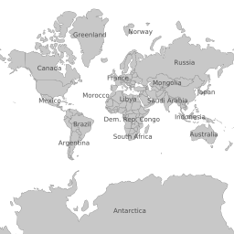

Tile Mode¶
- Author
Paul Ramsey
- Contact
pramsey at cleverelephant.ca
- Author
Jeff McKenna
- Contact
jmckenna at gatewaygeomatics.com
- Last Updated
2020-12-07
Table of Contents
Introduction¶
MapServer can feed tile-based map clients directly using the CGI “tile mode”. Tile-based map clients work by dividing the map of the world up into a discrete number of zoom levels, each partitioned into a number of identically sized “tiles”. Instead of accessing a map by requesting a bounding box, a tile client builds a map by accessing individual tiles.
Configuration¶
Tile requests are handled by the ‘mapserv’ CGI program. In order to return tiles in the correct projection, MapServer must be built with the –use-proj option turned on. You can check if your version of ‘mapserv’ has projection support by running it with the ‘-v’ option and looking for ‘SUPPORTS=PROJ’.
Example 1. On Unix:
$ ./mapserv -v
MapServer version 7.7-dev OUTPUT=PNG OUTPUT=JPEG OUTPUT=KML SUPPORTS=PROJ
SUPPORTS=AGG SUPPORTS=FREETYPE SUPPORTS=CAIRO SUPPORTS=SVG_SYMBOLS
SUPPORTS=RSVG SUPPORTS=ICONV SUPPORTS=FRIBIDI SUPPORTS=WMS_SERVER
SUPPORTS=WMS_CLIENT SUPPORTS=WFS_SERVER SUPPORTS=WFS_CLIENT SUPPORTS=WCS_SERVER
SUPPORTS=SOS_SERVER SUPPORTS=GEOS SUPPORTS=POINT_Z_M SUPPORTS=PBF INPUT=JPEG
INPUT=POSTGIS INPUT=OGR INPUT=GDAL INPUT=SHAPEFILE
Example 2. On Windows:
C:\ms4w> mapserv -v
MapServer version 7.7.0-dev (MS4W 4.0.4) OUTPUT=PNG OUTPUT=JPEG OUTPUT=KML
SUPPORTS=PROJ SUPPORTS=AGG SUPPORTS=FREETYPE SUPPORTS=CAIRO SUPPORTS=SVG_SYMBOLS
SUPPORTS=SVGCAIRO SUPPORTS=ICONV SUPPORTS=FRIBIDI SUPPORTS=WMS_SERVER
SUPPORTS=WMS_CLIENT SUPPORTS=WFS_SERVER SUPPORTS=WFS_CLIENT SUPPORTS=WCS_SERVER
SUPPORTS=SOS_SERVER SUPPORTS=FASTCGI SUPPORTS=THREADS SUPPORTS=GEOS
SUPPORTS=POINT_Z_M SUPPORTS=PBF INPUT=JPEG INPUT=POSTGIS INPUT=OGR
INPUT=GDAL INPUT=SHAPEFILE
MapServer requires that each LAYER in your .map file (or “mapfile”) have a valid PROJECTION block to support reprojection. Because the tile mode uses reprojection, you will have to ensure each LAYER has a valid PROJECTION block.
Note
The MAP-level projection in the mapfile is not required for mode=tile as the output projection will always be set to the Google Mercator projection EPSG:3857 and its extents, for mode=tile (in other words, the Google Mercator projection is hard-coded in the underlying MapServer source code, always for the mode=tile case). If your mapfile is also serving through an OGC service, such as WMS, your MAP-level projection will obviously be required for the OGC service, but can be any supported EPSG projection (does not have to be 3857).
Configuration checklist:
MapServer compiled with PROJ support
Mapfile with a PROJECTION defined for every LAYER
As of MapServer 6.0, there are two extra parameters available for configuring tile mode.
tile_map_edge_buffer renders the tile into a buffered rendering frame, then clips out the final tile. This will reduce edge effects when large symbols or wide lines are drawn. Recommended value: the size of the largest symbol or line width in your mapfile.
tile_metatile_level renders the tiles into a fixed metatile, then clips out the final tile. This will reduce label repetition, at the expense of much higher rendering cost. Recommended value: 1 if you are doing labelling of large features in your layer. 0 otherwise.
If you use both tile_map_edge_buffer and tile_metatile_level at the same time, the buffer will be applied at the meta-tile level.
Note
The MapServer 7.6.2 release included a memory leak fix for mode=tile
Utilization¶
The MapServer tile support adds three new directives to the CGI interface:
mode=tile tells the server to generate tiles based on the other tile mode parameters
tilemode=gmap tells the server use the Google Maps tile scheme for the tiles (this is the default tilemode)
tile=x+y+z tells the server what tile you want to retrieve, using the Google Maps tile addressing system
tilemode=ve tells the server use the Bing Maps (formerly “Virtual Earth”) tile naming scheme for the tiles
tile=10231 tells the server what tile you want to retrieve, using the Bing Maps (formerly “Virtual Earth”) tile addressing system
A valid mode=tile request might therefore look like:
http://127.0.0.1/cgi-bin/mapserv.exe?
MAP=/ms4w/apps/local-demo/local.map
&MODE=tile
&TILEMODE=gmap
&TILE=0+0+0
&LAYERS=countries
which results in a 256x256 tile (notice that it is in the Google Mercator projection, even though the mapfile has an output PROJECTION object of “init=epsg:4326”) :

About Spherical Mercator¶
Spherical Mercator (also called the “web mercator” or “google mercator”) is a world projection that all the major tile-based map interfaces (Google Maps, Bing Maps [formerly “Virtual Earth”], Yahoo Maps, OpenLayers) use to address tiles. The associated official EPSG code is EPSG:3857.
A spherical mercator set of tiles has the following properties:
The map has been reprojected to mercator using a spherical mercator algorithm
There is one tile in the top zoom level, zoom level zero
Each successive zoom level (z) has 2^z tiles along each axis
Tiles are 256x256 in size
Google Maps and Bing Maps (formerly “Virtual Earth”) both use spherical mercator as their underlying tile projection, but use different formats to address the individual tiles.
Google Maps uses an “x”, “y”, “zoom” format. The zoom indicates which level to pull tiles from, and the “x” and “y” indicate while tile in that zoom level to pull.
Bing Maps (formerly “Virtual Earth”) uses a single string to address each tile. The top zoom level in Bing Maps has four tiles (equivalent to Google’s zoom level 1). The top left tile in the Bing Maps top zoom level is addressed as “0”, top right as “1”, bottom left as “2” and bottom right as “3”. Each tile the next level is addressed by first referencing the top level tile that contains it, then its address relative to that tile. So the top left tile in the second zoom level is “00” and the bottom right one is “33”. See the Bing Maps site for more details: http://msdn.microsoft.com/en-us/library/bb545006.aspx
Using Google Maps¶
The Google Maps API includes support for using alternative tile sets as overlays, or as alternate base maps. Here is an example of an GTileLayerOverlay
1 2 3 4 5 6 7 8 9 10 11 12 13 14 15 16 17 18 19 20 21 22 23 24 25 26 27 28 29 30 31 32 33 34 35 36 37 | <!DOCTYPE html
PUBLIC "-//W3C//DTD XHTML 1.0 Strict//EN"
"http://www.w3.org/TR/xhtml1/DTD/xhtml1-strict.dtd">
<html xmlns="http://www.w3.org/1999/xhtml">
<head>
<meta http-equiv="content-type" content="text/html; charset=utf-8"/>
<title>Google/MapServer Tile Example</title>
<script src="http://maps.google.com/maps?file=api&v=2&key=[YOUR KEY HERE]"
type="text/javascript"></script>
<script type="text/javascript">
function load() {
if (GBrowserIsCompatible()) {
var urlTemplate = 'http://localhost/cgi-bin/mapserv?';
urlTemplate += 'map=/var/map.map&';
urlTemplate += 'layers=layer1 layer2&';
urlTemplate += 'mode=tile&';
urlTemplate += 'tilemode=gmap&';
urlTemplate += 'tile={X}+{Y}+{Z}';
var myLayer = new GTileLayer(null,0,18,{
tileUrlTemplate:urlTemplate,
isPng:true,
opacity:1.0 });
var map = new GMap2(document.getElementById("map"));
map.addControl(new GLargeMapControl());
map.addControl(new GMapTypeControl());
map.setCenter(new GLatLng(35.35, -80.55), 15);
map.addOverlay(new GTileLayerOverlay(myLayer));
}
}
</script>
</head>
<body onload="load()" onunload="GUnload()">
<div id="map" style="width: 500px; height: 500px"></div>
</body>
</html>
|
Note the format of the tileUrlTemplate: a valid URL, with {X}, {Y} and {Z} substitution tokens that Google Maps will replace with the tile coordinates and zoom level on the fly to retrieve tiles from your server.
You can also use a MapServer tile layer as an alternate base map:
1 2 3 4 5 6 7 8 9 10 11 12 13 14 15 16 17 18 19 20 21 22 23 24 25 26 27 28 29 30 31 32 33 34 35 36 37 38 | <!DOCTYPE html
PUBLIC "-//W3C//DTD XHTML 1.0 Strict//EN"
"http://www.w3.org/TR/xhtml1/DTD/xhtml1-strict.dtd">
<html xmlns="http://www.w3.org/1999/xhtml">
<head>
<meta http-equiv="content-type" content="text/html; charset=utf-8"/>
<title>Google/MapServer Tile Example</title>
<script src="http://maps.google.com/maps?file=api&v=2&key=[YOUR KEY HERE]"
type="text/javascript"></script>
<script type="text/javascript">
function load() {
if (GBrowserIsCompatible()) {
var urlTemplate = 'http://localhost/cgi-bin/mapserv?';
urlTemplate += 'map=/var/map.map&';
urlTemplate += 'layers=layer1 layer2&';
urlTemplate += 'mode=tile&';
urlTemplate += 'tilemode=gmap&';
urlTemplate += 'tile={X}+{Y}+{Z}';
var myLayer = new GTileLayer(null,0,18,{
tileUrlTemplate:urlTemplate,
isPng:true,
opacity:0.3 });
var map = new GMap2(document.getElementById("map"));
map.addControl(new GLargeMapControl());
map.addControl(new GMapTypeControl());
map.setCenter(new GLatLng(35.35, -80.55), 15);
var myMapType = new GMapType([myLayer], new GMercatorProjection(18), 'MapServer');
map.addMapType(myMapType);
}
}
</script>
</head>
<body onload="load()" onunload="GUnload()">
<div id="map" style="width: 500px; height: 500px"></div>
</body>
</html>
|
The only change from the previous example is that we don’t create a GTileLayerOverlay, we create a GMapType, and use addMapType(), instead of addOverlay().
Using Bing Maps (formerly “Virtual Earth”)¶
The Bing Maps API also includes support for using alternative tile sets as overlays, or as alternate base maps. Here is an example:
1 2 3 4 5 6 7 8 9 10 11 12 13 14 15 16 17 18 19 20 21 22 23 24 25 26 27 28 29 30 31 32 | <!DOCTYPE html PUBLIC "-//W3C//DTD XHTML 1.0 Strict//EN" "http://www.w3.org/TR/xhtml1/DTD/xhtml1-strict.dtd">
<html xmlns="http://www.w3.org/1999/xhtml">
<head>
<meta http-equiv="content-type" content="text/html; charset=utf-8"/>
<title>Virtual Earth Example</title>
<script type="text/javascript" src="http://dev.virtualearth.net/mapcontrol/mapcontrol.ashx?v=6.1"></script>
<script type="text/javascript">
var map = null;
function OnLoadMap () {
map = new VEMap("myMap");
map.LoadMap();
var url = "http://localhost/cgi-bin/mapserv?";
url += "map=/var/map.map&";
url += "mode=tile&";
url += "layers=layer1 layer2&";
url += "tilemode=ve&";
url += "tile=%4";
var tileSourceSpec = new VETileSourceSpecification( "myLayer", url );
tileSourceSpec.Opacity = 0.3;
map.AddTileLayer(tileSourceSpec, true);
}
</script>
</head>
<body onload="OnLoadMap();">
<div id="myMap" style="position:relative; width:500px; height:500px;"></div>
</body>
</html>
|